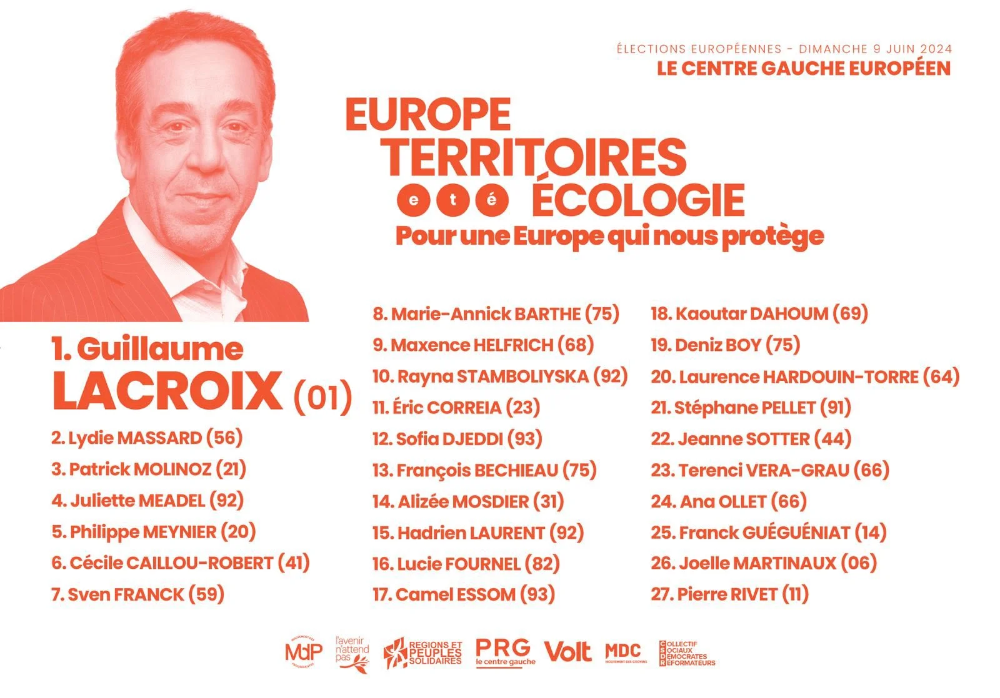

Pourquoi un vote de conviction est un vote utile

Blog, 07/06/2024, par Sven Franck
En distribuant des tracts au début de la semaine, j'ai croisé un des anciens de la section locale des Verts. Il était surpris de me voir encore courir avec une pile de tracts de Volt et m'a dit : « Rentre chez toi, ça ne vaut pas la peine. » J'ai hésité un instant, puis j'ai continué, car je voulais couvrir mon quartier avant la fin de la semaine et il me restait cinq mille tracts à distribuer.
Si cela ne vaut pas la peine, pourquoi même candidater ?
Au total, 38 listes se présentent à ces élections européennes. À en juger par les sondages, seules six d'entre elles ont une chance réelle de franchir le seuil de 5% nécessaire pour obtenir des élu.e.s. Pire encore, les 32 listes restantes sont en-dessous de 3% d’intentions de vote, ce qui signifie que leurs dépenses de campagne ne seront pas remboursées. Beaucoup de ces partis clôtureront leurs budgets de campagne avec plusieurs millions d'euros de pertes. Pourtant, ces formations se présentent, organisent des réunions, se plaignent d’un traitement médiatique inégalitaire et continuent contre vents et marées à partager leurs programmes et idées. On pourrait effectivement dire que « cela ne vaut pas la peine ». Et pourtant, plus de listes que jamais sont en campagne.
La raison est simple : leurs candidates et candidats croient en leurs idées et en leur projet, tout comme moi. Ils constatent que ces idées manquent aujourd'hui dans le paysage politique et sont, plus souvent qu'autrement, cruellement nécessaires. Qu’il s’agisse des droits des animaux, des droits numériques ou de la promotion d’une Europe fédérale comme nous le faisons chez Volt, nous avons besoin d'un renouvellement politique et nous nous battons toutes et tous jusqu’au dernier instant pour chaque vote.
Pour remettre en question le statu quo
Alors que je vois les autres sections nationales de Volt Europa progresser et faire élire des parlementaires européens, je pourrais aussi simplement jeter l'éponge et déclarer que les conditions sont trop difficiles en France. Pourtant, nous nous présentons avec Volt, au sein de la coalition Europe Territoires Écologie. Premier candidat de Volt sur la liste, je suis en septième position : je pourrais donc dire que je ne serai jamais élu, me demander pourquoi faire un effort, et pourtant, je fais campagne sans relâche, essayant de faire avancer notre liste et de faire connaître Volt.
Pourquoi ? Parce que si nous ne nous fions qu'à l'utilité, les choses ne changeront jamais. Si nous acceptons le statu quo et les décisions qu’il nous force à prendre, pourquoi protestons-nous et descendons-nous dans la rue ? Le changement ne vient pas de l'acceptation qu'il n'y a pas d'autres options, mais de la volonté de se lever et de ce battre pour que ces options soient entendues.
Ce week-end, Volt Europa se présente dans quinze pays. Les Pays-Bas ont déjà voté : selon les sondages de sortie des urnes, leur score est proche de 5% et garantit à Volt Nederland au moins un député européen, voire une deuxième, si les tendances se confirment dans les résultats officiels, dimanche. Volt Deutschland est à 3% dans les sondages et, espérons-le, obtiendra plusieurs élus dimanche. Aux dernières élections européennes, en 2019, ces deux étaient des outsiders, des trublions : il y a cinq ans, Volt Allemagne avait eu de la chance et Volt Pays-Bas avait raté de peu, mais l’un comme l’autre ont continué à travailler pour nos objectifs communs, et peuvent aujourd'hui rivaliser avec les partis établis.
Le changement ne se fait pas du jour au lendemain. Il faut de la patience, de la persévérance et un peu de chance. La France enverra probablement 40% de députés d'extrême droite au Parlement européen – preuve s’il en fallait de l'incapacité des partis établis à répondre aux extrémistes. Oui, un vote utile est un vote pour continuer à soutenir ces partis et d'accepter le statu quo. Alors nous pourrions aussi simplement accepter que Marine Le Pen et Jordan Bardella soient notre prochaine présidente et notre prochain Premier ministre au motif que face à 40%, « cela ne vaut pas la peine » de se battre.
Un vote utile par conviction
La France est connue dans le monde entier comme le pays qui s'est battu pour sa liberté. Et puisque c'est l'anniversaire du débarquement, il convient de rappeler que le monde entier a aussi combattu pour la liberté ici en France. La France du passé n'a pas accepté le statu quo. La France d'aujourd'hui ne devrait pas non plus l'accepter. Si nous voulons un changement politique, nous avons besoin de nouveaux partis et d'un rééquilibrage de notre paysage politique.
Si vous vous considérez comme étant à gauche de l'échiquier politique, avec plus de 65% des électeurs votant pour la droite et l'extrême-droite, le changement en 2027 implique de convaincre 20% de ces électeurs de changer de camp. Ils auront du mal à se tourner vers un candidat des Verts ou des sociaux-démocrates dans l'ombre de la France Insoumise. Un changement doit passer par le centre-gauche. Un vote utile n'est pas de donner quelques voix de plus à Raphaël Glucksmann, mais de s'assurer que la liste Europe-Territoires-Écologie menée par Guillaume Lacroix passe également, car cette liste construit le centre-gauche qui peut séduire les électeurs au-delà des clivages.
Un changement signifie également mettre l'Europe sur la carte en France. Volt est un parti paneuropéen présentant le même programme commun dans tous les États membres. Après ce week-end, nous serons probablement le seul mouvement à élire des eurodéputés dans plusieurs pays. Nous avons des députés à Chypre, en Bulgarie et aux Pays-Bas et des centaines de représentants locaux à travers l'Europe. Nous incarnons l'Europe et nous voulons faire avancer le projet européen. Un vote par conviction pour l'Europe est un vote pour une vision paneuropéenne au lieu d'un agenda national pour l'Europe. Un vote par conviction, c’est donc aussi pour la liste Europe Territoires Écologie, dont Volt fait partie.
Chef de file pour Volt, en septième position sur notre liste de coalition, je m’assurerai que l'Europe soit mieux connue en France au cours des cinq prochaines années. J'aurai besoin de cette « petite chance » pour y parvenir et je compte sur votre soutien.
Ce dimanche, je voterai pour Europe Territoires Écologie : parce que c'est la seule chance pour la gauche de construire une majorité en 2027, et parce que Volt France en fait partie.
Merci pour votre soutien.
